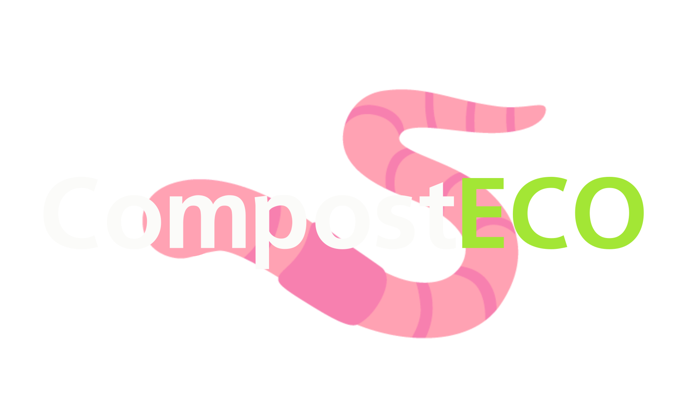
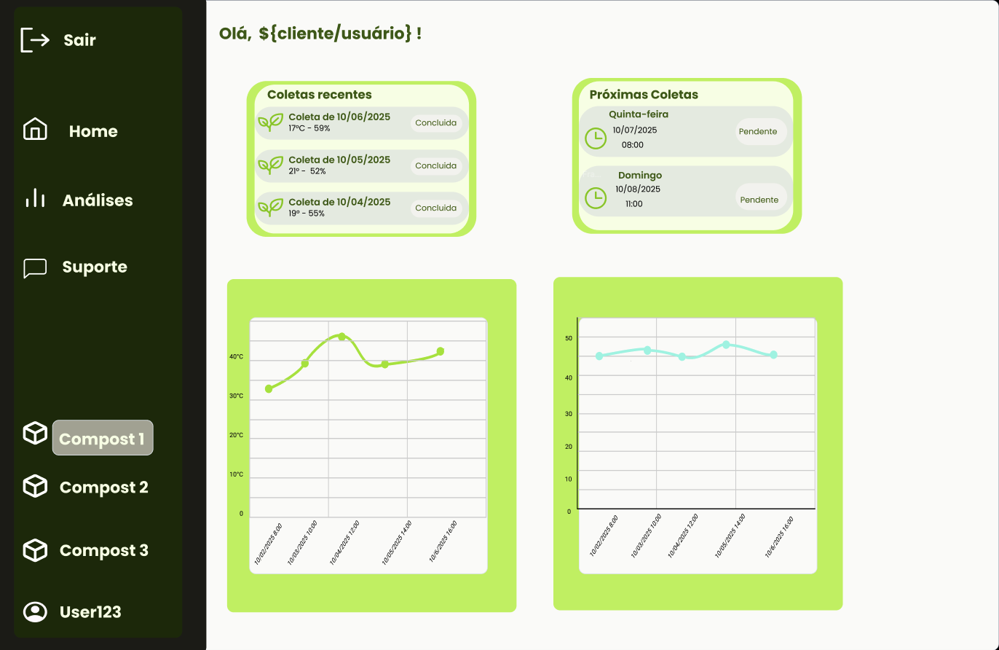

Transforme resíduos em lucro com monitoramento inteligente.
Controle temperatura e umidade da sua composteira em tempo real e aumente a eficiência da produção de adubo orgânico.
Pequenas variações podem comprometer todo o processo biológico, afetando diretamente a qualidade do adubo.
Condições inadequadas podem levar à morte das minhocas, interrompendo completamente a produção.
Sem controle adequado, o produtor perde tempo, recursos e dinheiro sem perceber.
CompostEco utiliza sensores e uma plataforma web para monitorar temperatura e umidade em tempo real, garantindo condições ideais para a produção de adubo orgânico.
Acompanhe temperatura e umidade continuamente, com dados atualizados diretamente da composteira.
Receba avisos quando as condições saírem do ideal e evite prejuízos antes que eles aconteçam.
Visualize gráficos simples e claros para entender o comportamento da sua produção.
Tome decisões mais rápidas e precisas com base em informações confiáveis.

Área do seu plantio em m²:
Quantidade de caixas:
Não. O CompostEco foi desenvolvido para ser simples e intuitivo. A plataforma apresenta os dados de forma clara, permitindo que qualquer produtor acompanhe e tome decisões facilmente.
Não totalmente. O sistema depende de conexão com a internet para enviar os dados do Arduino para a plataforma e permitir o monitoramento em tempo real.
Os alertas são exibidos diretamente na dashboard quando a temperatura ou umidade saem da faixa ideal, permitindo uma ação rápida do usuário
Não. O CompostEco é um sistema de monitoramento passivo. Ele fornece dados e alertas, mas as decisões e ações são de responsabilidade do usuário.
Atualmente, o sistema monitora temperatura e umidade da composteira, que são os principais fatores para o bom funcionamento da vermicompostagem.
Não. O sistema auxilia no monitoramento, mas não garante a sobrevivência das minhocas. A responsabilidade pelo manejo é do usuário.
Se você tem alguma dúvida ou deseja mais informações sobre nossos serviços, entre em contato conosco. Estamos aqui para ajudar!